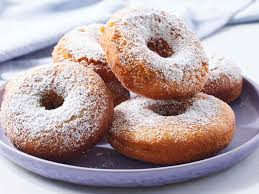

Home
Super Easy Donuts

Description
This is a very easy donut recipe I found on Allrecipes. Donuts are enjoyed by everyone
from firefighters to engineers. They can be eaten any time. Truly one of the great wonders of the
world.
Ingredients
- 3/8 cup of milk
- 2 tablespoons white vinegar
- 1/2 cup white sugar
- 2 tablespoons shortening
- 1 large egg
- 1/2 teaspoon vanilla extract
- 2 cups sifted all-purpose flour
- 1/2 teaspoon baking soda
- 1/4 teaspoon salt
- 1 quart oil for deep frying
- 1/2 cup confectioners' sugar for dusting
Steps
- Gather all ingredients.
- Stir together milk and vinegar; let stand for a few minutes until thick.
- Cream together sugar and shortening in a mixing bowl until smooth.
- Beat in egg and vanilla until well-blended.
- Sift together flour, baking soda, and salt in a separate bowl; stir into sugar mixture alternating with milk mixture.
- Roll dough out on a floured surface to 1/3-inch thickness.
- Cut into donuts using a donut cutter. Let stand for about 10 minutes.
- Heat oil in a large, deep skillet to 375 degrees F (190 degrees C).
Fry donuts in hot oil in batches until golden, turning over once, about 1 to 2 minutes per side.
- Drain on paper towels.
- Dust with confectioners' sugar while they are still warm and serve.